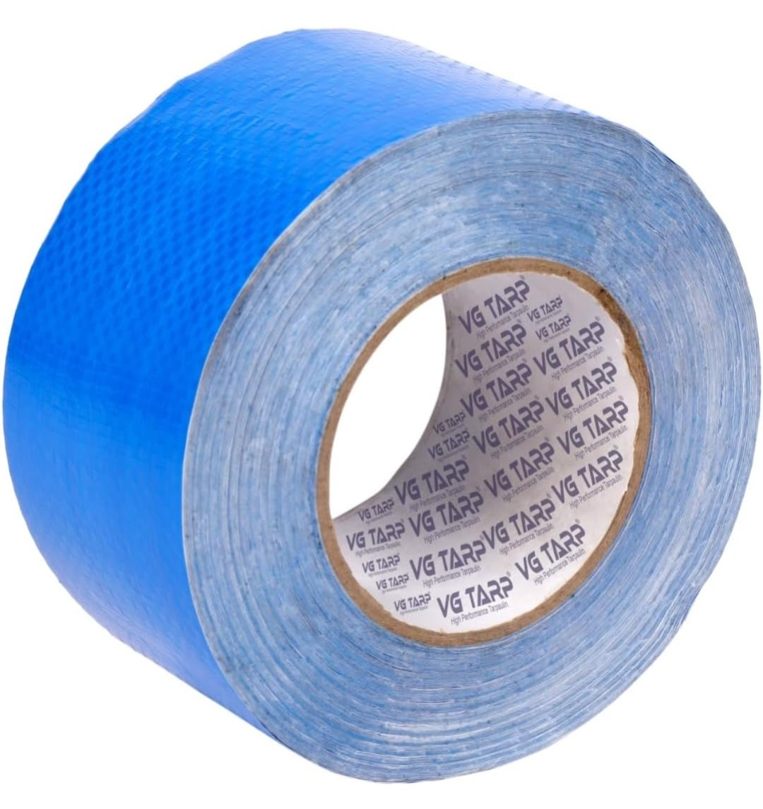
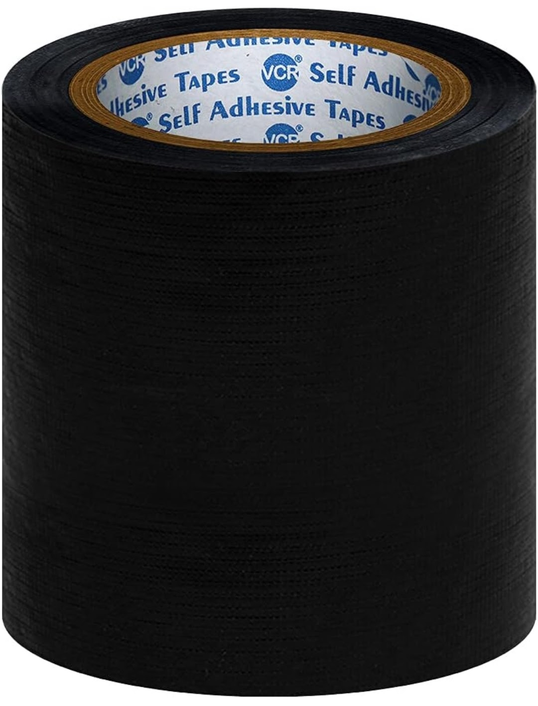
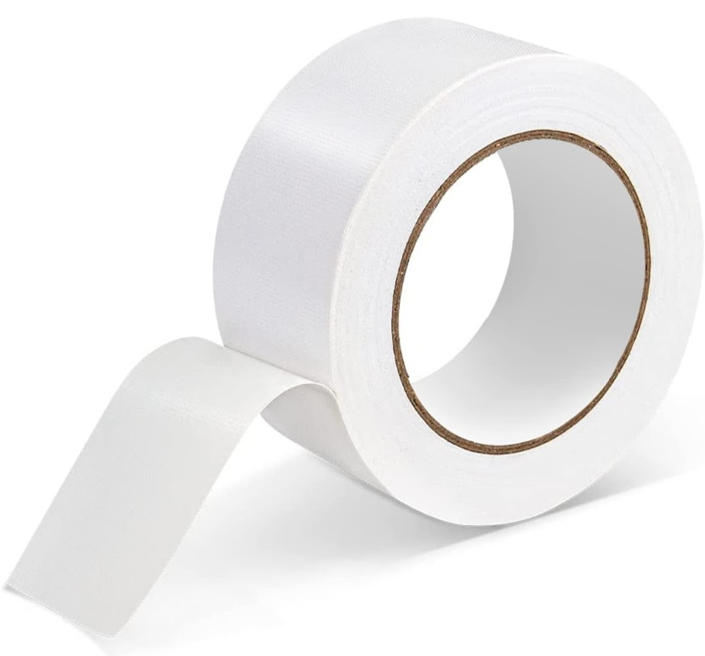
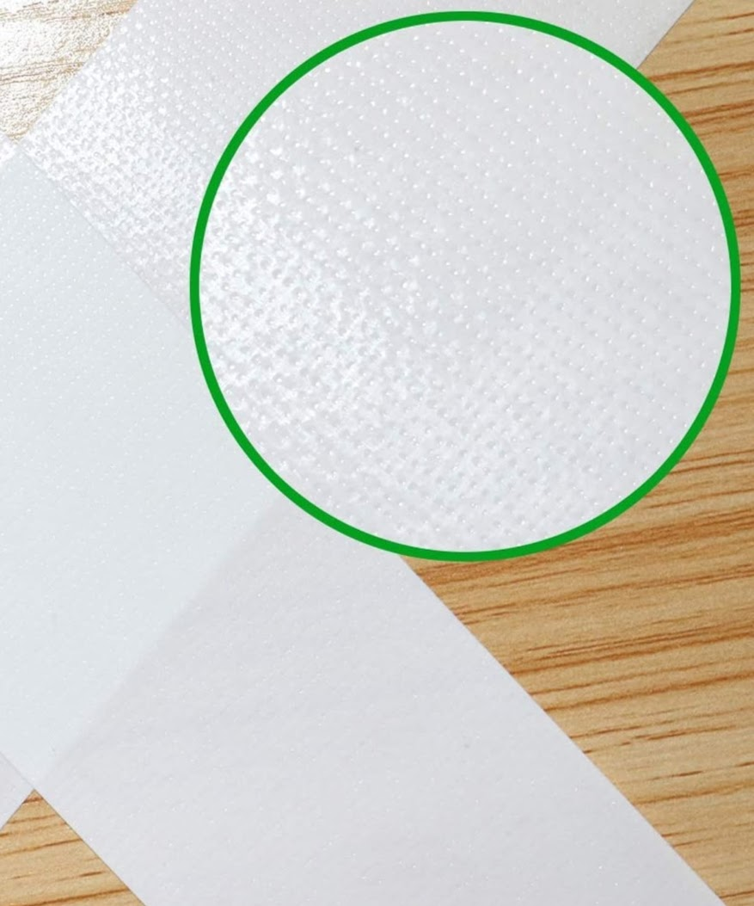

Product Overview
Tarpaulin Repair Tape is a pressure-sensitive adhesive tape
specially developed to repair cuts, tears, and punctures
in tarpaulins and plastic covers.
It provides a fast, economical, and durable repair solution
without the need for stitching or heat welding, helping
extend the usable life of tarpaulins in field conditions.
Key Features
- Strong adhesive bonding on tarpaulin surfaces
- Waterproof and weather resistant
- Easy to apply without tools
- Flexible and tear resistant
- Suitable for indoor and outdoor repairs
Specifications
- Material: PE / PVC based repair tape
- Adhesive: High-tack pressure-sensitive adhesive
- Width: Multiple sizes available
- Colour: Blue, Green, Transparent (varies)
- Usage: Tarpaulin and plastic repair
Applications & Use Cases
- Repairing torn tarpaulin sheets
- Fixing truck and transport covers
- Temporary repair of tents and shelters
- Plastic sheet and cover patching
- Emergency on-site repairs
Best Suited For
- Transporters and truck operators
- Construction and infrastructure sites
- Agricultural and farm usage
- Warehouses and outdoor storage areas
Selection Note
For Indian operating conditions, tarpaulin repair tape
should be applied on clean and dry surfaces for best
adhesion. Wider tapes are recommended for larger tears
and high-wind exposure areas. Press firmly to ensure
complete bonding, especially during monsoon use.
Commonly Used Along With
- HDPE and Nylon Tarpaulin Sheets
- PP or Nylon Ropes
- Tarpaulin Eyelets and Hooks
Product FAQs
-
Can tarpaulin repair tape be used during rain?
The tape is waterproof after proper application, but
surfaces should be dry during installation for best
adhesion.
-
Is stitching required after applying repair tape?
No. Tarpaulin repair tape is designed as a no-stitch
solution for quick and effective repairs.
-
Is the tape suitable for heavy-duty tarpaulins?
Yes. High-quality repair tapes are suitable for HDPE,
nylon, and PVC tarpaulins used in transport and
construction.
-
How long does a repair last?
When properly applied, repairs can last for extended
periods depending on exposure, load, and handling
conditions.
-
Can it be used on both sides of the tarpaulin?
Yes. For stronger repairs, tape can be applied on both
sides of the damaged area.
-
Are bulk rolls available?
Yes. Tarpaulin repair tape is available in bulk rolls
and custom widths for transporters, contractors, and
industrial buyers.